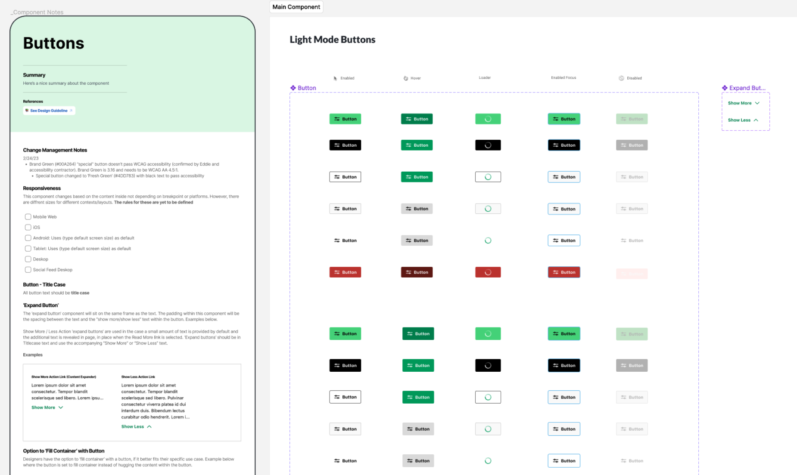
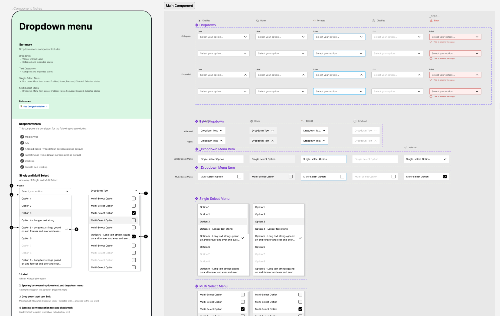
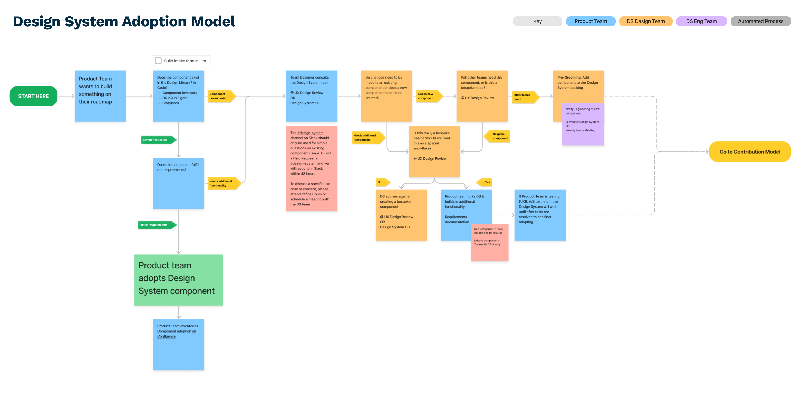
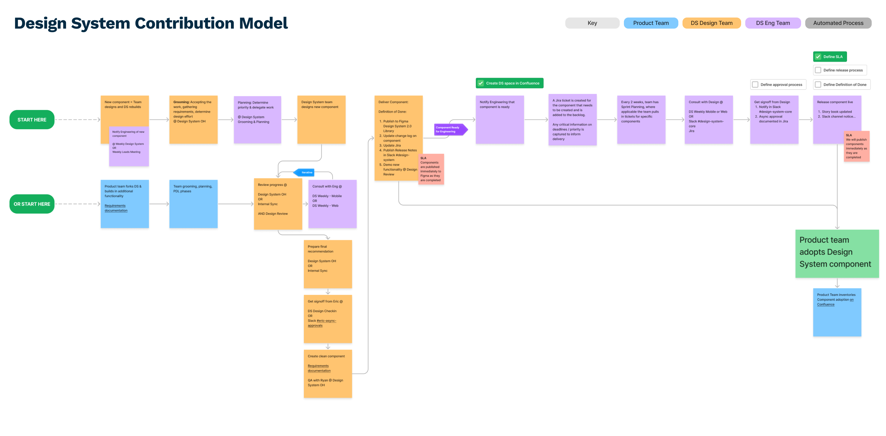
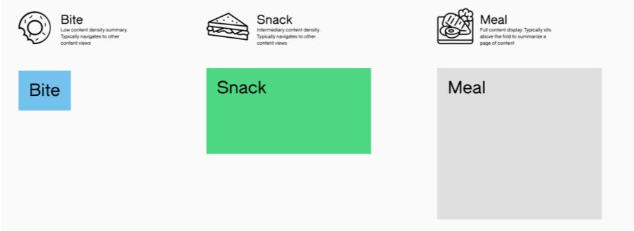
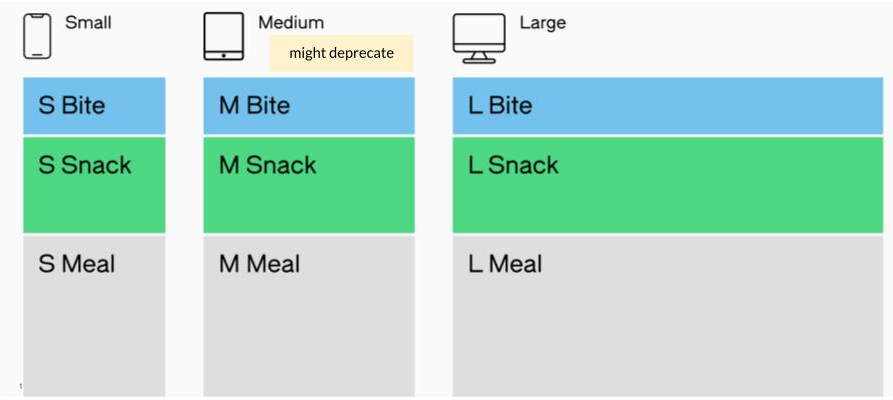
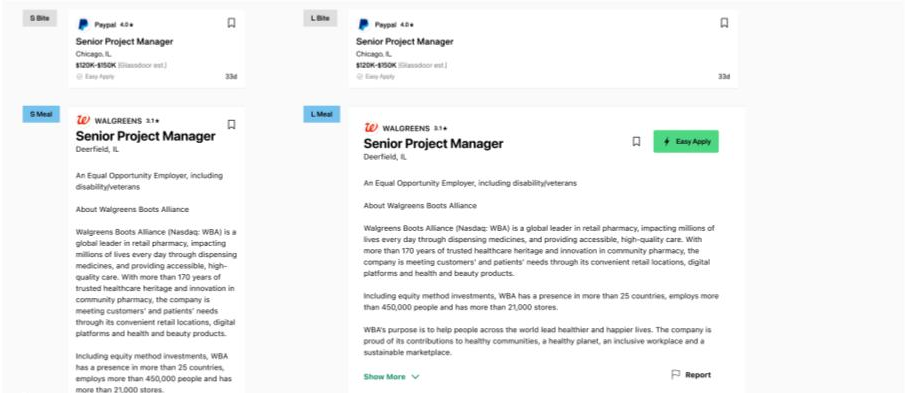

Design System Leadership
As Product Design Director at Glassdoor, I led the delivery of component design & development for Glassdoor's Design System 2.0. I developed and implemented a governance model across the organization, including streamlining adoption of and enabling contribution to the Design System by Product teams.
Figma Component Library
It was important to educating partners and executives about the structure of the Design System, so that they could understand how this effort would help to accelarate design and development. Atomic structure, content density, and screen-size breakpoints translated into scalable building blocks of key content types, like Jobs.


Governance
It was important to educating partners and executives about the structure of the Design System, so that they could understand how this effort would help to accelarate design and development. Atomic structure, content density, and screen-size breakpoints translated into scalable building blocks of key content types, like Jobs.


System Structure & Org Education
It was important to educating partners and executives about the structure of the Design System, so that they could understand how this effort would help to accelarate design and development. Atomic structure, content density, and screen-size breakpoints translated into scalable building blocks of key content types, like Jobs.



